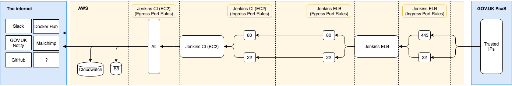

Jenkins¶
Contents
What we use Jenkins for¶
We use Jenkins for:
deploying applications through our release pipeline
running smoke tests and functional tests
running scheduled scripts (usually overnight)
tagging packaged libraries and Docker images, after a change has been merged
Jenkins can be accessed at https://ci.marketplace.team.
Our Jenkins jobs are defined in the digitalmarketplace-jenkins repo, in the job definitions directory.
Accessing and deploying jobs to Jenkins¶
Developers can have access to Jenkins once they are security cleared.
For HTTPS and SSH access to Jenkins you must be on GDS network or VPN; allowed IP addresses are defined in digitalmarketplace-credentials/terraform/common.json. Authentication is done using your Github account; the list of allowed users is found in digitalmarketplace-credentials/jenkins-vars/jenkins.yaml.
For SSH access to Jenkins, we use Github developer SSH keys. These keys are gathered by the keys ansible task, which
needs to be re-run to propagate any changes made to the set of trusted SSH keys. We also have a shared key called ci
in the aws-keys directory of the digitalmarketplace-credentials repo, however you should generally not need
to use this.
See Adding and removing access for new starters / leavers for a step-by-step guide.
Instructions on how to SSH into the Jenkins box or deploy new Jenkins jobs can be found in the digitalmarketplace-jenkins repo README.
Jenkins Logging¶
For debugging and auditing purposes, we have configured Jenkins to log various events. You can log into the CloudWatch console and look at the relevant log groups to see what’s been happening.
All of the below log events are streamed to AWS CloudWatch using the Amazon CloudWatch Logs Agent (see PR #173 for details).
Types of events |
Log file (relative to /var/log) |
CloudWatch log group |
Further details |
|---|---|---|---|
Job events |
jenkins/audit-trail.log |
jenkins-access |
|
Web access |
jenkins/access.log |
jenkins-audit |
|
SSH access |
auth.log |
server-login-access |
Jenkins infrastructure¶
The infrastructure on which Jenkins relies is created in the main AWS account.
Shared Infrastructure: AWS resources created once per account and shared across all Jenkins instances:
ELB wildcard certificate
IAM profile/policy document
EBS snapshot policy
S3 bucket to store access logs
These are defined in the Terraform main account.
Per-instance Infrastructure: AWS resources created once for each jenkins instance. Each Jenkins instance has its own:
EC2 instance
Elastic load balancer (ELB), that uses the shared certificate
DNS ‘A’ record in Route 53
Security groups for the EC2 and ELB instances
These are defined in the jenkins.jenkins module and can be instantiated in the main account as many times as we
like (typically once). See Creating a new Jenkins instance for details on how to create these resources.
Per-instance Infrastructure¶
EC2¶
This is the instance that Jenkins runs on. It’s based on a public image which is currently ami-01e6a0b85de033c99 which is an
Ubuntu 18.04 LTS image. If you’re particularly interested in ubuntu images, read this list. For more
information on finding an AMI, look at this useful post
We currently use a t3.large instance. As these are charged at a lower ‘reserved’ pricing tier. Agreed with AWS by the Reliability Engineering team.
This section defines an elastic IP address which is associated with the instance. This is important as it allows us to add this IP to our whitelist for the router. The environment specific whitelists can be found in the credentials repo in the vars folder.
We also define a key pair to use - the public part is injected into the Terraform as a variable by the Makefile we use to run our Terraform code. This key lives in our credentials repo under aws-keys.
An extra 100GB volume is defined and attached to the instance. This volume is mounted in the Ansible set up.
The instance is defined with a couple more attributes, specifically an instance profile and a security group, which are described below.
ELB¶
Jenkins runs behind an elastic load balancer (ELB). The main reason for this is to take advantage of the free certificate available from AWS for load balancers.
The ELB listens on port 443 and port 22 and proxies traffic on to the Jenkins instance on port 80 and 22 respectively. It terminates our https traffic and sends it on as http. Both the ELB and the instance have strict security groups to protect this traffic, as well as being in the same VPC and subnet.
The ELB performs health checks on the instances that are attached to it (just our Jenkins instance). It does this by pinging a TCP request to port 22. Usually a health check is performed on port 80, however when standing up a brand new Jenkins instance with Terraform, there is nothing listening on port 80. If the health check is returned unhealthy twice in a row then the instance is removed from the ELB. It is not destroyed.
To keep an audit trail, we configure the ELB to export access logs every 60 minutes. These are saved to an S3 bucket (details below).
DNS record (Route 53)¶
We create an A record for the dns_name variable passed in to the module. This will be something like
ci.marketplace.team, but can actually use any subdomain due to our use of a wildcard certificate. Usually an A
record would point directly to an IP address, however AWS allows you to define an alias to a load balancer. This is
convenient as the DNS of a load balancer is long and horrible and not guaranteed to remain consistent. The code here
will automatically grab the details required for this alias from the load balancer created elsewhere in the module.
Security Groups¶
This is where we define who can access the ELB and the EC2 instance. Two security groups are defined, one for each of the ELB and EC2, with different ingress (who can talk to the box) and egress (who the box can talk to).
The ELB security group allows TCP access to port 22 only for IP address in our list of developer IPs. These can be found in digitalmarketplace-credentials/terraform/common.json. Any traffic received on port 22 from a whitelisted IP is proxied directly to port 22 on the EC2 instance. Rather than defining the location of the EC2 instance with a CIDR block, we just define the source security group (the security group of the EC2 instance).
The ELB security group allows HTTPS access on port 443 to the list of developer IPs as well as the elastic IP used by the EC2 instance. This is important, as some of the Ansible code requires an HTTP request be made to itself. HTTPS traffic is terminated here and proxied on to port 80 in the EC2 instance via HTTP. Both the ELB and EC2 are in our private AWS VPC and on the same subnet within that, so the unsecured traffic never leaves our own network.
The EC2 security group works in a similar way to the ELB security group, except ingress is restricted to ports 80 and 22 and only to traffic coming from the ELB (by defining the source security group as the ELB’s security group). Egress for the instance is unrestricted.
(The security group diagram source can be opened using draw.io in Google Drive if it needs to be edited.)
Installing Jenkins itself¶
Jenkins itself is configured using Ansible, while the jobs within Jenkins use Jenkins Job Builder.
Once the infrastructure steps above have completed, run make install from the
digitalmarketplace-jenkins repo to install and configure Jenkins and Jenkins Job Builder.
Warning
It is possible to manually edit config and jobs in the Jenkins web UI, however any config changes that deviate
from what Jenkins Job Builder maintains will be lost whenever Jenkins restarts. Make sure any changes are committed to
the digitalmarketplace-jenkins repo and applied using make reconfigure or make jobs.
This includes enabling/disabling jobs as well as editing what the jobs actually do.
We also use various Jenkins plugins (such as the pipeline workflow). More details about these can be found in the digitalmarketplace-jenkins repo README.
Destroying Jenkins¶
The terraform module for Jenkins enables instance termination protection to make it harder to accidentally delete the root volume for the Jenkins instance. Terminating the instance is not possible from the AWS console or cli. If you want to terminate the Jenkins instance you can either remove it from the terraform, or follow the instructions on AWS on how to change termination protection.
Rebuilding Jenkins from scratch¶
If the worst happens, or we just fancy it, and we need to completely recreate Jenkins please see here for a rough guide.
How Jenkins uses credentials¶
As a CI/CD server, Jenkins needs access to many of our credentials in order to run jobs that automate our build and deployment processes, as well as to run other jobs as part of maintaining the Digital Marketplace. These credentials are exposed to our jobs in some different ways, though our plan going forward is primarily to pass any secrets through environment variables.
Jenkins global configuration¶
A number of our Jenkins jobs expect to be given certain environment variables containing the credentials they need.
Generally, where this is the case, these are sourced from Jenkins global configuration (Manage Jenkins -> Configure
System -> Global properties). Here we define a number of tokens (primarily for the Data and Search APIs across all
environments, and for Notify/Mailchimp). These tokens are statically defined in the digitalmarketplace-credentials repo in
jenkins-vars/jenkins.yaml and are updated when Jenkins config is applied (with make reconfigure from the
digitalmarketplace-jenkins repository).
If these tokens are not in sync with what the apps in those stages are expecting, a number of our jobs will fail due to be unable to authenticate with eg the APIs.
- Some examples of jobs that read from Jenkins global configuration:
stats_snapshots
notify_suppliers_of_new_questions_answers
smoke_tests
functional_tests
index_briefs
index_services
The environment variables for Jenkins itself are defined in the jenkins_defaults.j2 Ansible template. These
include the JAVA_ARGS provided to /etc/default/jenkins, such as Content Security Policy.
Decrypting dm-credentials¶
Other Jenkins jobs use a local checkout of the dm-credentials repository maintained on the Jenkins host. A separate job,
update-credentials, pulls the latest master branch of the repository to make sure it’s updated as needed. Most of the jobs that
use this method are those which interact with CloudFoundry to deploy/manage our applications and services.
- Some examples of jobs that decrypt dm-credentials on demand:
clean_and_apply_db_dump
database_migration_paas
release_application_paas
build_image